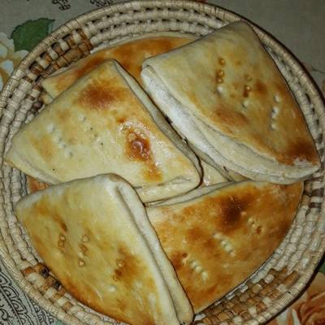
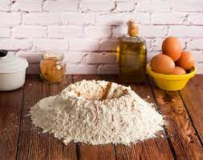
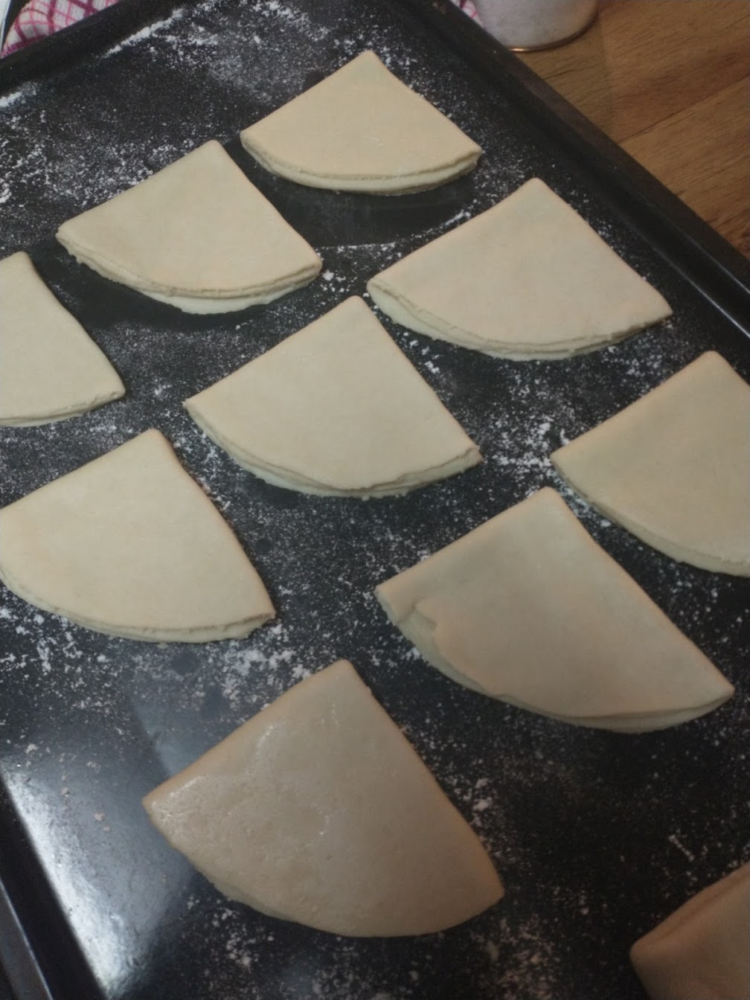
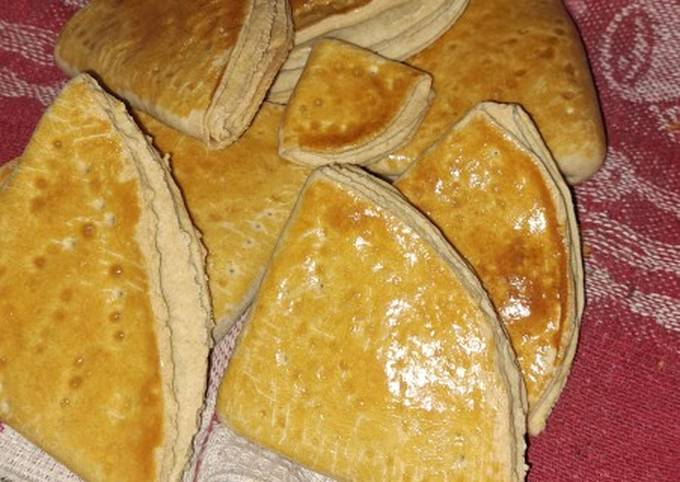

Las más wenas Dobladitas del mundo mundial

El plato
Las dobladitas son un gran ejemplo de la panadería chilena. Su origen viene de las empanadas.
Con la masa restante de estas, se solían hacer panes de masa fina que se dobablan sobre sí mismos hasta formar un triángulo
para luego ser metidos en el horno
Ingredientes
- 500g de harina sin polvos
- 10g de sal
- 1 huevo
- 225gr de agua
- 200gr de manteca
Pasos
- Preparación de la masa

Para empezar, prepararemos la masa de nuestros panes. Idealmente podemos trabajarla en un bowl grande o en una mesada
- Verteremos los 500gr de nuestra harina mezclada con los 10gr de sal en un bowl grande o en una superficie, procurando formar un volcán en ella
- Derretiremos nuestra manteca en un microondas o en una pequeña sartén a fuego bajo
- Dentro del orificie creado, pondremos todos nuestros ingredientes líquidos. El agua y la manteca previamente derretida
- Mezclaremos todos los ingredientes hasta que todos se incorporen y lograr una masa homogenea
- Finalmente, amasaremos la masa durante unos 10 minutos, dependiendo de qué tan bien lo hagamos. La idea es que la masa adquiera una textura lisa
- Formado

La parte más importante de una dobladita es su formado. Para ello, espolvorearemos la lata del horno previamente para ir dejando allí los panes ya formados. También necesitaremos trabajar en una mesa amplia para ir formándolos
- Con ayuda de una pesa, dividiremos nuestra masa en pequeños bollos de 100gr
- Primero espolvorearemos la mesa sobre la cual trabajaremos. Después, uslearemos cada bollo hasta que quede una masa fina y plana. Como referencia, debe de tener el tamaño de un plato mediano
- Ya aplanado nuestro bollo, pondremos es la masa sigl plato boca abajo sobre la masa, y con un cuchillo afilado de punta cortaremos la masa siguiendo la forma del plato. La idea es que la masa quede con forma de círculo
- Ya listo nuestro círculo, crearemos la forma del pan. Primero lo doblaremos por la mitad para que quede un semicírculo. Luego doblaremos el semicírculo sobre sí mismo para que quede una especie de triángulo. Iremos ordenando nuestros panes sobre la lata ya espolvoreada a medida que los vayamos haciendo
- Repetir este proceso con todos los bollos
- Horneado

El horneado de las dobladitas es sencillo y rápido. Por lo tanto hay que tener mucho cuidado con que no se quemen
- Primero precalentaremos nuestro horno a unos 220° durante unos 20 minutos
- en un recipiente pequeño, quebraremos nuestro huevo y le agregaremos una cucharada de agua
- Con ayuda de un tenedor, revolveremos la mezcla hasta lograr un líquido homogeneo
- Con un pincel de cocina o incluso con la mano, pinaremos la superficie de nuestras dobladitas con la mezcla. La idea es que logren una tonalidad dorada al salir del horno
- Pondremos nuestra bandeja con las dobladitas en el horno a 220° durante unos 20 minutos o hasta que estén doradas por arriba y por abajo